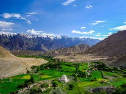

Famous Cities
Srinagar
- Dal Lake: The most iconic attraction in Srinagar, known for its houseboats and Shikara rides on the tranquil waters.
- Mughal Gardens: Beautiful gardens built by the Mughals, including Shalimar Bagh, Nishat Bagh, and Chashme Shahi.
- Shankaracharya Temple: A historic temple perched on a hilltop, offering stunning views of Srinagar and Dal Lake.

- Nigeen Lake: A smaller yet serene lake known for its peaceful houseboats and scenic views.
- Hazratbal Shrine: A revered Muslim shrine located on the northern shores of Dal Lake, significant for its religious importance.
- Pari Mahal: A historical monument with terraced gardens, offering panoramic views of Dal Lake and the surrounding mountains.
Jammu
- Vaishno Devi Temple: One of the most sacred Hindu temples, attracting millions of pilgrims every year.
- Raghunath Temple: A historic temple complex dedicated to Lord Rama, known for its intricate architecture.
- Bahu Fort: An ancient fort that offers panoramic views of Jammu and houses a temple dedicated to Goddess Kali.

- Mubarak Mandi Palace: A royal palace complex that reflects the grandeur of Dogra architecture and history.
- Amar Mahal Museum: A beautiful palace turned museum, showcasing historical artifacts and a library.
- Manda Zoo: A small zoo with a variety of animals, perfect for a family day out.
Pahalgam
- Betaab Valley: A picturesque valley surrounded by snow-capped mountains, lush greenery, and serene streams, famous for Bollywood films.
- Aru Valley: A scenic village located at the base of the Himalayas, known for its peaceful environment and adventure activities.
- Lidder River: A beautiful river that flows through Pahalgam, offering activities like rafting and fishing.

- Baisaran Hills: Also known as the 'Mini Switzerland of India,' these hills offer stunning views and lush meadows for picnics and pony rides.
- Sheshnag Lake: A high-altitude alpine lake located on the route to the Amarnath cave, famous for its pristine beauty.
- Mamleshwar Temple: An ancient Hindu temple dedicated to Lord Shiva, known for its historic significance and tranquil setting.
Anantnag
- Martand Sun Temple: An ancient temple dedicated to the Sun God, known for its magnificent architecture and historical significance.
- Kokernag: A beautiful spring and garden area, famous for its lush greenery and serene environment.
- Verinag: The source of the Jhelum River, this spring is surrounded by manicured gardens and scenic beauty.

- Aharbal Waterfall: A stunning waterfall located near Anantnag, known for its breathtaking views and natural beauty.
- Daksum: A peaceful retreat in the mountains, offering hiking trails, scenic views, and a cool climate.
- Sheshnag Lake: A high-altitude lake located on the Amarnath Yatra route, surrounded by snow-covered mountains.
Baramulla
- Gulmarg: A popular hill station known for its scenic beauty, skiing, and the world’s highest golf course.
- Wular Lake: One of the largest freshwater lakes in Asia, offering stunning views and opportunities for boating.
- Eco Park: A beautiful park along the Jhelum River, offering picturesque views and a relaxing environment.

- Khilanmarg: A picturesque valley known for its meadows, offering beautiful views of the Himalayas and a popular destination for trekkers.
- St. Joseph's Church: One of the oldest churches in the region, known for its historic and cultural significance.
- Sopore: A nearby town famous for its apple orchards and vibrant market.
Jammu Region
Jammu City
- Vaishno Devi Temple: One of the most revered pilgrimage sites in India, located in the Trikuta Mountains near Jammu.
- Bahu Fort: An ancient fort offering scenic views of the Tawi River, with a temple dedicated to Goddess Kali inside.
- Raghunath Temple: A famous temple complex dedicated to Lord Rama, known for its grandeur and religious significance.
- Amar Mahal Palace: A historical palace turned museum, offering insights into the Dogra dynasty and panoramic views of the Tawi River.
- Mubarak Mandi Palace: A blend of Rajasthani, Mughal, and European architecture, once serving as the royal residence of the Dogra kings.
- Peer Kho Cave Temple: An ancient temple dedicated to Lord Shiva, located within a natural cave on the banks of the Tawi River.
Patnitop
- Nathatop: A scenic viewpoint offering breathtaking views of the snow-covered peaks of the Himalayas and popular for paragliding.
- Sanasar Lake: A picturesque lake surrounded by lush green meadows, perfect for outdoor activities like boating and trekking.
- Kud Park: A charming park with well-maintained gardens and beautiful flower beds, ideal for family outings.

- Patnitop Park: A serene park with walking trails and picnic spots, surrounded by tall pine trees and offering magnificent views.
- Madhatop: A tranquil spot located a short trek from Patnitop, popular for snow-related activities during winter.
- Shiva Garh: A lesser-known trek that leads to a mountain peak, offering stunning views and an adventurous experience.
Ladakh Region
Leh
- Leh Palace: A former royal palace offering stunning panoramic views of the city and surrounding mountains.
- Shanti Stupa: A white-domed stupa built to promote peace, offering breathtaking views, especially at sunrise and sunset.
- Thiksey Monastery: One of the largest monasteries in Ladakh, known for its impressive architecture and large statue of Maitreya Buddha.

- Hemis Monastery: A famous monastery in Ladakh, renowned for its annual festival celebrating Guru Padmasambhava.
- Magnetic Hill: A gravity hill with an optical illusion that makes vehicles appear to move uphill on their own.
- Pangong Lake: A stunning high-altitude lake known for its changing colors and scenic beauty.
Nubra Valley
- Diskit Monastery: The oldest and largest monastery in Nubra, known for its stunning views and the giant Maitreya Buddha statue.
- Hunder Sand Dunes: Famous for its unique sand dunes and double-humped camels, offering a surreal desert experience in the Himalayas.
- Sumur Village: A quaint village known for its apple orchards and the Samstemling Monastery.

- Turtuk Village: A beautiful village known for its scenic beauty and rich Balti culture.
- Panamik Hot Springs: Natural hot springs offering a relaxing experience amid stunning landscapes.
- Yarab Tso Lake: A serene and less-explored lake known for its crystal-clear waters and tranquility.
Adventure Activities
Trekking and Mountaineering
- Hemis Trek: A challenging trek that leads to the Hemis Monastery, offering stunning views of the Zanskar range.
- Chadar Trek: A unique trek on the frozen Zanskar River, best done in winter for an unforgettable experience.
- Sonamarg to Thajiwas Glacier: A beautiful trek from Sonamarg to Thajiwas Glacier, known for its lush meadows and snow-capped peaks.

- Mount Kolahoi: The highest peak in the Lidder Valley, popular among experienced mountaineers for its challenging routes.
- Gulmarg to Ningle Nallah: A scenic trek that combines beautiful landscapes with opportunities for mountaineering.
- Shepherd's Trail: A less-traveled path that offers a glimpse into the lives of local shepherds amidst breathtaking scenery.
River Rafting
Experience the thrill of river rafting in the breathtaking landscapes of Jammu and Kashmir. The pristine rivers, surrounded by majestic mountains and lush valleys, offer some of the best white-water rafting experiences in India.

- Best Rivers for Rafting: The Zanskar and Indus rivers are popular choices, offering varying levels of rapids suitable for both beginners and experienced rafters.
- Scenic Views: Enjoy stunning views of snow-capped peaks, verdant valleys, and traditional villages while navigating through thrilling rapids.
- Guided Tours: Many adventure companies offer guided rafting tours, ensuring safety and a memorable experience.